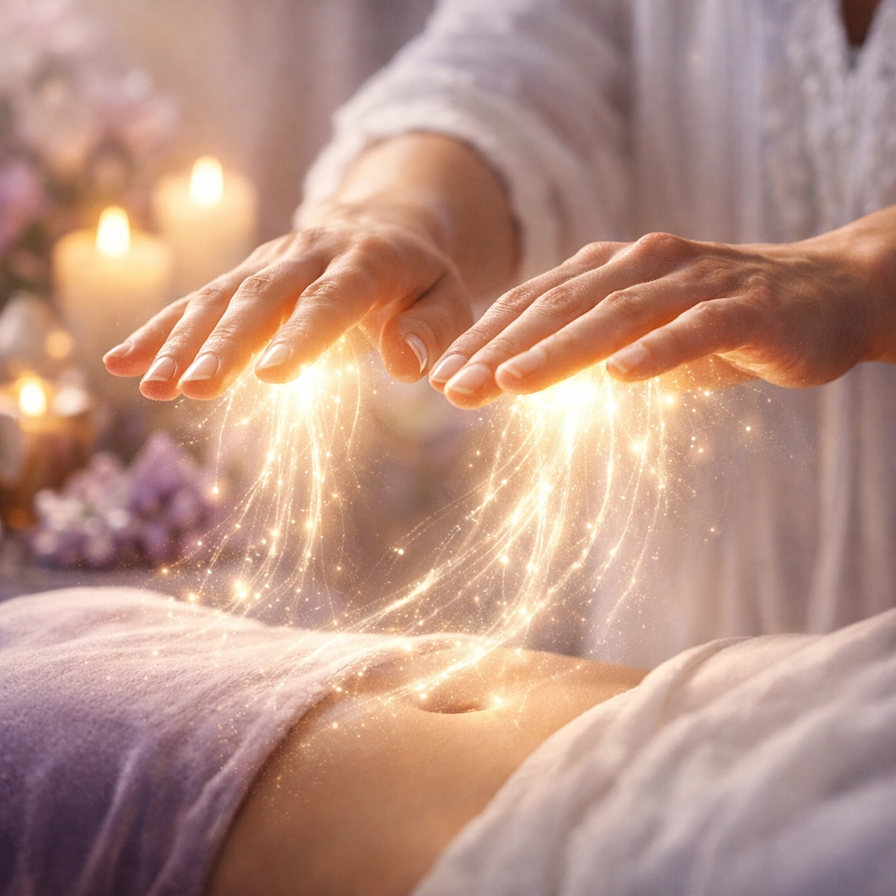
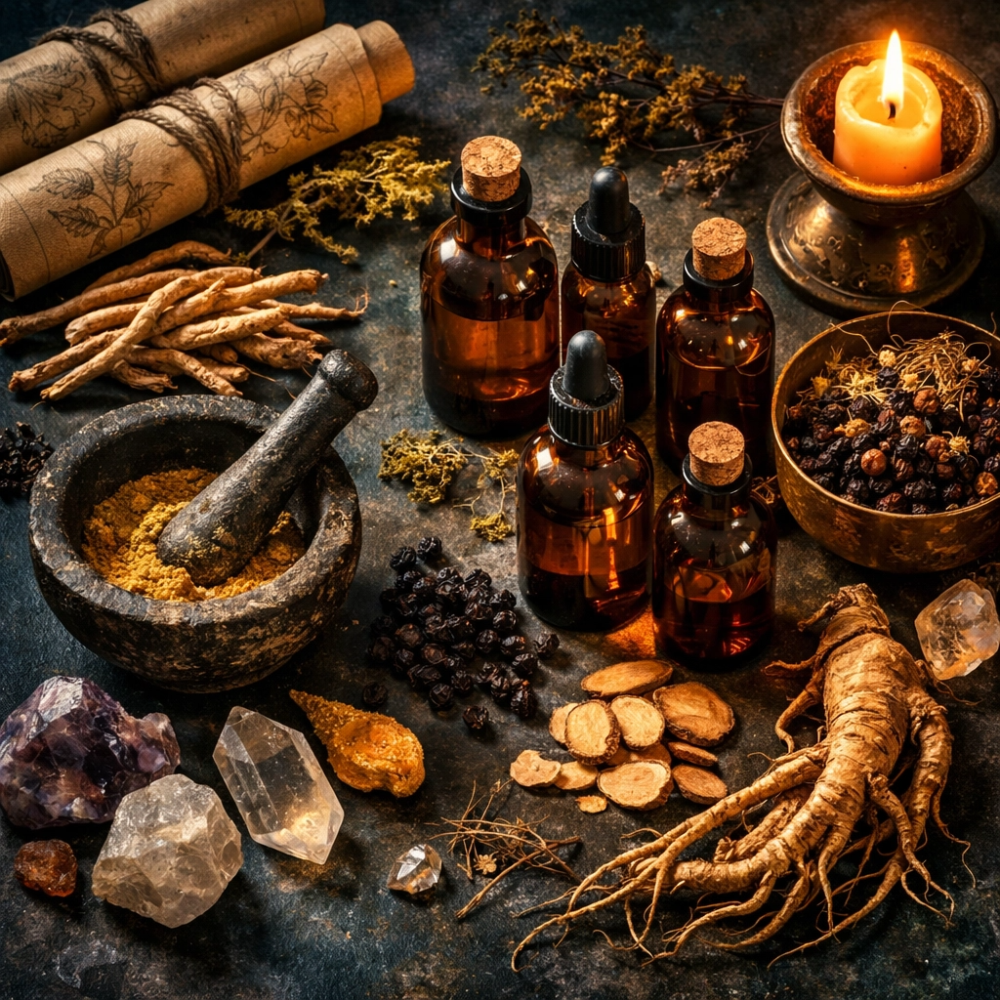

Heal your body, mind, and spirit through ancient wisdom and modern science
Start Your TransformationI am a certified holistic life coach with a Bachelor's degree in Health Science from Mary Baldwin University. My journey has taken me deep into the intersection of ancient wisdom and modern science, where I've discovered the true keys to vitality and longevity.
My expertise spans nutrition and fitness coaching, Reiki energy medicine, breathwork facilitation, and the study of plant medicine and medical anthropology. I've authored a book on the Fountain of Youth and developed proprietary formulas based on ancient prescriptions, organic chemistry, and deep meditation downloads.
I specialize in working with women to heal their pain and suffering—whether physical, emotional, or spiritual. Through sacred ceremonies, circles, and personalized coaching, I help you reclaim your vitality and step into your most authentic, radiant self.
Farm-to-table guidance using whole foods and natural remedies to heal your body from the inside out. Personalized protocols based on your unique biochemistry.
Certified breathwork facilitation with neuro-change techniques. Shift your brainwaves, release trauma, and access profound clarity and healing.

Master Reiki practitioner services to clear energetic blockages, restore balance, and activate your body's innate healing capacity.
Gather in sacred space to heal collectively. Through circles and ceremonies, we access deeper healing and feminine polarity work.

Explore the power of plant medicine and proprietary formulas based on ancient prescriptions and modern biochemistry for longevity.
Deep work on understanding and embodying your divine feminine and masculine energies for greater balance, power, and love.
The true Fountain of Youth is not found in cosmetic procedures or synthetic supplements. It is rooted in the earth, in the wisdom of our ancestors, and in the miraculous intelligence of our own bodies.
Through my studies in biochemistry, biogenetics, organic chemistry, and medical anthropology, I have discovered that:
Bachelor's in Health Science, certifications in nutrition, fitness, breathwork, Reiki, neuro-change, and coursework in neuropsychology, biochemistry, and biogenetics.
I treat the whole you—body, mind, and spirit. No symptom-chasing; we heal at the root.
Specialized in working with women to heal pain, reclaim their power, and step into their divine feminine.
My clients experience profound shifts in energy, health, relationships, and life direction.
"Working with this coach transformed not just my health, but my entire life. I finally understand what true wellness means."
"The breathwork sessions alone have changed my nervous system. I feel calm, grounded, and alive in a way I never have before."
"The women's circles are sacred. I've healed so much pain and connected with my divine feminine power. Highly recommend!"
Book a free 30-minute consultation to explore how we can work together to unlock your inner Fountain of Youth.